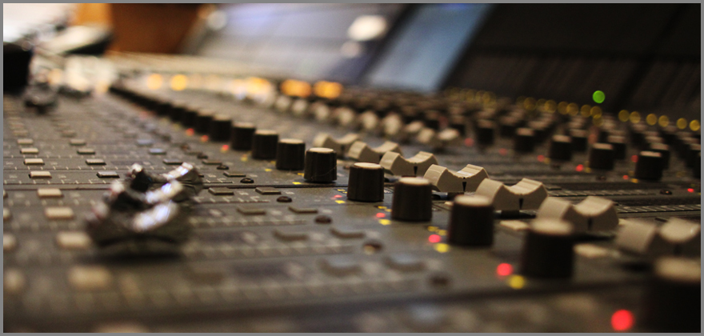
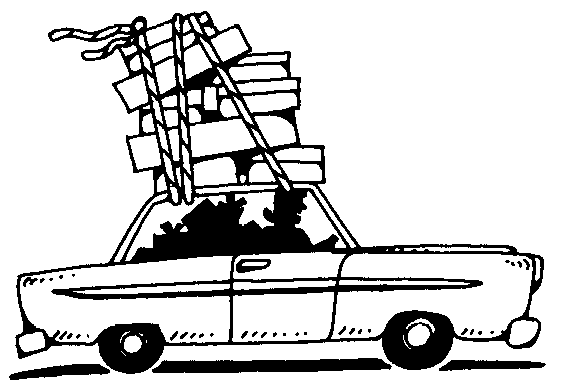

-
albumListenFeatured recordings by Joel Williams
Ode d'Espagne
If I Were a Bell
-
info_outlineAboutJoel Williams is a Tacoma local who has been playing and recording music for most of his life. After completing a 2 year long program at Robert Lange Studios, he continues to record both for the studio and on his own. With years of recording under his belt, Joel Williams has experience recording rap, rock, funk, jazz, classical, and many more genres with a wide range of instrumentation.
-
contactsContact Info
Phone: 1-253-341-7193
Email: joel3115@gmail.com
Available Locations
Select a recording location to read more!

For professional quality recordings in a beautiful, historic studio, record with Joel at Robert Lange Studios located in North Seattle.
For live-sounding recording in an aesthetic environment, record with Joel at 'The Church' located in North Tacoma.

For convenient, flexible recordings, record with Joel wherever you are with a mobile studio set-up.